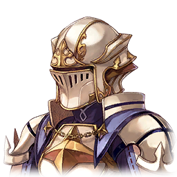

|
 |

Natalie |
Is this true? |

Vettel |
Yes. I've since sent Nina to scout things out. There hasn't been any major commotion yet, but unease is spreading across the country. |

Victor |
Ugh! What could the Wratharis army be planning?! |

Chloe |
Are the garrisoned troops on the border merely an attempt to rile us up, or are they a diversion for something bigger? |
Natalie |
We're all still on edge after the Lion Monarch's Charge... We could very well be overthinking this. |
Natalie |
Still, there might be some meaning behind their presence, whether it be a provocation or a diversion. |
Natalie |
Not knowing their true aim is rather ominous, isn't it? |
Vettel |
There's not much to say at this point. Let's wait for Nina's report. |
Natalie |
Is she all right? Work has really piled up on her since she became vice-captain. |
Natalie |
You're looking pretty tired, too, Vettel. |
Vettel |
Yes, but with the Blue Flame Guard practically out of commission, we have to pick up the slack. |
Vettel |
It's hard, but we have to do all that we can for Envylia. |

Nina |
We're back! It doesn't look like they're moving. |
Vettel |
We can't afford to start anything, but for the sake of our people's peace of mind, we can't just leave them be, either. |
Vettel |
I'm moving out. We will observe the Wratharis army, and keep them in check. |
Natalie |
Should you really be the one to go? If something should happen elsewhere... |
Victor |
That's right! What are we supposed to do if it was just a distraction? |
Vettel |
If my presence can help calm the tension, then I must go. Besides, you'll be fine without me. You have Nina here. |
Vettel |
If it turns out to be a distraction, then Vice-Captain Nina will take the lead. I know that can trust her to take care of things while I am gone. |
Vettel |
Isn't that right, Nina? |
Nina |
O-of course! |
Vettel |
The rest is up to you. See you soon. |
Nina |
I'll do my best! Oof... |
Victor |
Hey! Are you okay?! |
Nina |
Eek! |
Natalie |
Quiet, Victor. You're going to scare her. Are you all right, Nina? |
Nina |
S-sorry. I'm fine. I just got a little dizzy, that's all. |
Natalie |
Don't overdo it. Haven't you been pushing yourself too hard of late? All that work you've been doing on top of training... |
Natalie |
Your body is your most important asset. Don't destroy it by being reckless. |
Nina |
You're wrong! If I collapse after this amount of work, that's just proof that my determination wasn't strong enough! |
Nina |
I have to keep going! I have to try harder! |
Natalie |
This stubbornness... You really are turning into him—which means that it's pointless for me to argue with you. Here, drink this. |
Nina |
What is it? |
Natalie |
I told you, didn't I? I will do my part by healing your wounds, just as I used to do for Gerald. |
Natalie |
Not that you're injured, but here... He used to drink this a lot. |
Natalie |
This drink restores stamina, you see. It should help you push on. |
Nina |
Wow! Thank you! |
Natalie |
Heheh... I've continued to improve upon it, over and over and over again, and now the effects are simply outstanding! Heheheheheh. |
Victor |
Is this what a mad scientist looks like? |

Scarlet Flame Guard |
Report! An army other than the garrisoned Wratharis army appears to be marching on Envylia! |
Scarlet Flame Guard |
According to our information, it appears to be a detached force from the Wratharis army! Awaiting your command! |
| Nina - Natalie - Victor - Chloe |
Wh-what?! |
Nina |
Which direction are they approaching from? |
Scarlet Flame Guard |
They're not coming from the west where Captain Vettel is! They're advancing through the Desert Zone to our northern border! |
Nina |
There are a lot of therian villages out that way! They're going to get caught up in this if we don't hurry. |
Natalie |
So the stationed troops were a decoy! |
Victor |
Those jerks! They're using our ongoing restoration as an opportunity to invade! |
Natalie |
Nina! |
Nina |
I understand. We're going to mobilize our remaining knights and move out! |
Nina |
Natalie, secure a supply route. Victor, ready the troops. |
Victor |
Leave it to me! |
Natalie |
Sound judgment, and delivered so quickly... We're counting on you, Vice-Captain. |
Chloe |
Nina, what should I...? |
Nina |
I need you to stay here, Chloe. Please. For me. |
Chloe |
Stay...? Why?! I can fight! |
Nina |
There's doubt in your sword arm right now. We can't afford to take someone with so much doubt along with us. |
Chloe |
That's not true! |
Nina |
I've noticed, Chloe. As Vice-Captain, I watch everyone carefully. |
Nina |
Respect none who wield the sword without heart. I think that you would have a hard time standing on the battlefield right now. |
Chloe |
No, that's... That's not true! I have no doubts! |
Nina |
If that's the case, then show me here and now! |
Chloe |
N-Nina...? |
Nina |
Sorry for requesting this so suddenly, but I think it's something Sir Gerald would have done. |
Nina |
If you are truly free of doubts, then as one who bears the scarlet flame, I want you to prove it to me. |
Nina |
If you can't do that, then you're staying here. |
Nina |
In this state...you would just be putting yourself and everyone else in danger. |
Chloe |
I-I...! |
Chloe |
Fine! I'll show you! |